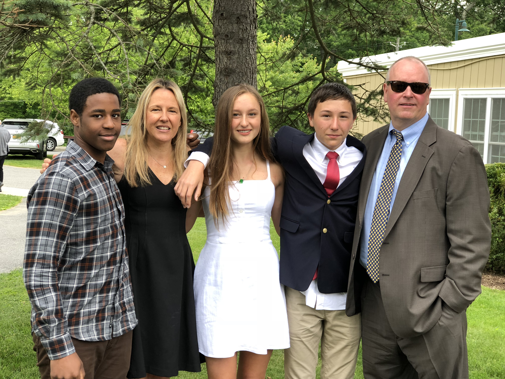
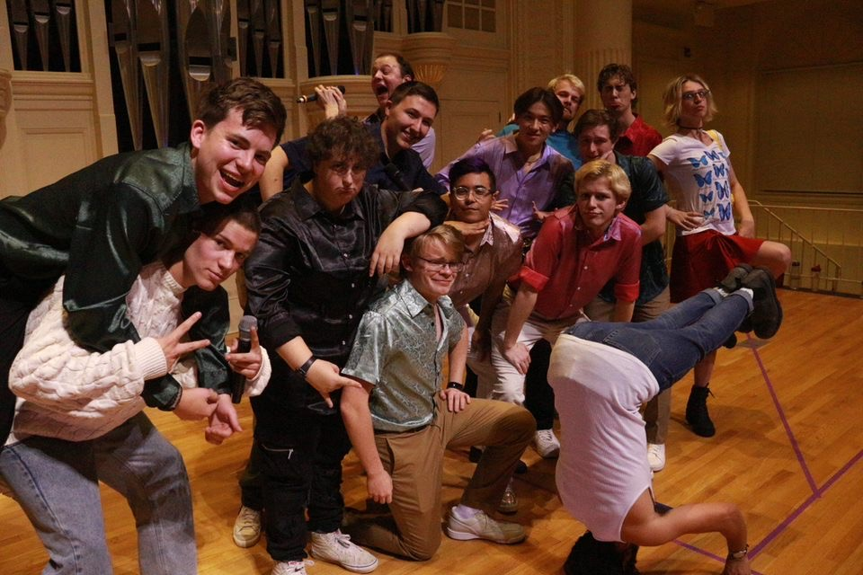

I would consider myself to have quite the unique family compared to the average person. My Mom and Dad are very successful in their careers,
having taken up positions in teaching and law respectivley. They eventually had my older sister Julianne: an Elon graduate who is just as hard working when it comes
to her current divemaster job in Key West, Florida. After two years they had me and my brother, Jake (not pictured.) Jake is a more special sibling, as he
was diagnosed with autism at an early age. As such, our family has lived our whole lives working around his accomodations, but we make the most of it through
inside jokes and enjoying the smaller things. When I was around Fifth Grade, I spent a lot more time than usual with my good friend Andrew. As it turns out, he wasn't
going through the best home life back where he was initially adopted. I had already known this, but it turned out that things had been recently taking a worse turn for him.
Thankfully though, my Dad, being the legal beast that he is, along with my Mom managed to obtain legal guardianship of him through court.
And so, all of us have deemed eachother as siblings ever since. Like I said. It's definitely not the most conventional family, but they're all great
and I wouldn't trade them for anything.
School is something that I have always valued since around 3rd grade. I was definitely the overacheiver in high-school who cared
very deeply about grades and almost cried when they got a C on a quiz. While I still very much value doing well in my classes, my recent
years in college have expanded my overall school experience for the better. For starters, I've gotten invloved in one of Elon University's
acapella groups: Smooth Progressions. It's an extracirricular that's definitely a lot of work, but there's a lot of reward that comes out
it. Whether it's going out to parties/outings, running into other members on campus, or performing impressive numbers, Smooth Progressions
has introduced my to a large percent of my friends and kept me busy and active. I'm also quite the fan of video games. It's pretty much my
only hobby aside from editing, but I'll get into that later. I've also been attending esport meetings and tournaments for Super Smash Bros
Ultimate, the game that I play and am undoubtedly the most competitive in. Being able to enjoy my hobbies with a group of people who share a
similar interest is something that I really enjoy, and Elon's incredible esport room allows me to do just that. (Sure, it's just a room. But
the majority of colleges don't even have that sort of thing.) I also get to come out on top in numerous tournament or friendly matches, which
also serves as quite the ego boost when I need it.
